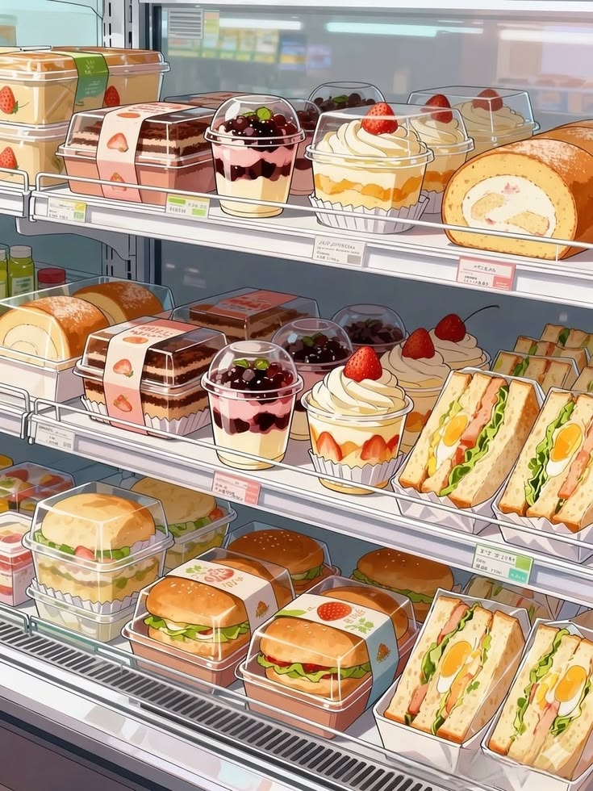

Eating Well on a Student Budget
Your first year is busy: new classes,new friends,and long days on
caampus.It is easy to skip meals or spend your whole allowance on milktea.
Eating regular,simple meals helps you focus in class,and
you do not need a big budget to do it
Where to Eat Near Campus
You have more options than you think.Here are the usual go-to spots:
- The school canteen for quick rice meals between classes
- Carinderias outside the gate for cheap,filing ulan and rice
- Your own baon from home, which is the cheapest choice of all
- Convenience stores for emergency snacks, not for every meal
How to Plan Your Weekly Food Budget
A little planning on Sunday saves you from being broke by Thursday.
- Check how much allowance you have for the whole week.
- Set aside money for fare and school needs first.
- Devide what is left by the numbers of school days.
- Pack baon on at least two days to strench your budget.
- Keep a small amount for emergencies, like a suprise project.
Quick Tips
Always bring a refillable water bottle. Water stations on campus
are free, and you will be save a lot compared to buying bottled drinks
everday.

Back to Home
Back to Enrollment Guide